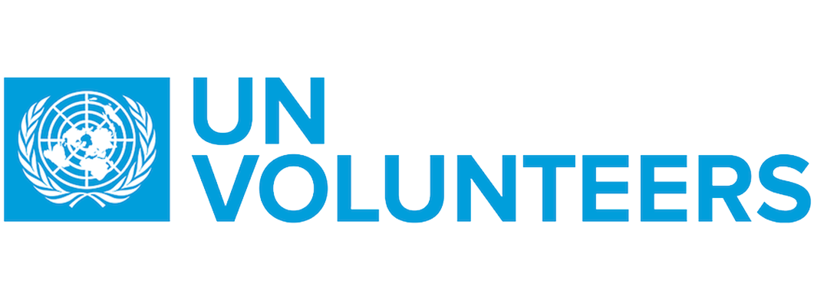

The UN Volunteers programme promotes volunteerism to support peace and development worldwide. During 2025, 17,169 UN Volunteers from 182 countries supported 59 partner UN entities in their peace and development activities in 172 countries.